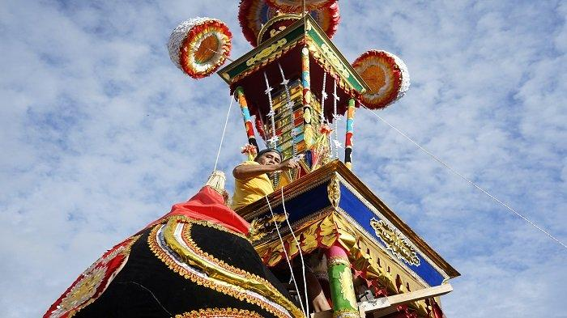
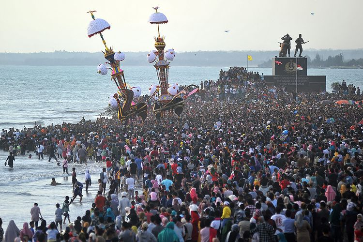

Wisata Tabuik Pariaman

Tabuik merupakan tradisi yang dilaksanakan di Kota Pariaman, Sumatera Barat.
Upacara Tabuik digelar setiap tahun pada tanggal 1-10 Muharram, dalam kalender Islam.
Tradisi Tabuik dilakukan untuk memperingati kematian Husein bin Ali, cucu Nabi Muhammad SAW,
dalam Perang Karbala, pada 10 Muharram. Tradisi ini telah dikenal luas masyarakat daerah lain
di Sumatera Barat, sehingga saat tradisi digelar selalu menyedot ribuan orang pengunjung.
Tabuik merupakan keramaian besar di Padang Pariaman. Kegiatan ini melibatkan pemerintah daerah,
masyarakat, dan pihak lain di luar daerah Pariaman.
Orang Pariaman melafalkan menjadi Tabuik, hal ini karena pengaruh dialek Minang,
dimana konsonan yang berakhiran t akan dilafalkan menjadi ik. Contohnya, takut menjadi takuik.
Nama tersebut mengacu pada legenda tentang munculnya makhluk kuda bersayap dan berkepala manusia
yang disebut buraq. Berdasarkan legenda itu, setiap tahun masyarakat Pariaman membuat tiruan buraq
yang tengah mengusung tabut di punggungnya berbentuk menara belasan meter dan dikenal sebagai Tabuik.
Secara harfiah Tabuik artinya peti mati atau keranda yang dihiasi bunga-bunga dan dekorasi lain yang
warna-warni dan kelengkapan lain yang menggambarkan buraq (hewan kuda yang berkepala manusia). Dalam
sejarah disebutkan Tabuik berasal dari orang India yang bergabung dalam pasukan Islam Thamil di Bengkulu
pada tahun 1826, pada masa kekuasaan Thomas Stamford Rafles dari Kerajaan Inggris. Setelah perjanjian London
pada tanggal 17 Maret 1829, Bengkulu dikuasai Belanda, sedangkan Inggris menguasai Singapura. Kondisi ini
menyebabkan pasukan Islam Tamil di Bengkulu menyebar, di antaranya sampai ke Pariaman. Sejak saat itu, Tabuik
hadir dan menjadi budaya masyarakat Pariaman. Secara simbolik, Tabuik menggambarkan kebesaran Allah SWT yang
membawa terbang jenazah Husein ke langit dengan buraq karena meninggal mengenaskan dalam Perang Karbala.
Sejarah Kota Tabuik Pariaman

Kota Pariaman termasuk kota tertua di pantai barat Pulau Sumatera.
Pariaman merupakan daerah yang cukup dikenal oleh pedagang bangsa asing semenjak tahun 1500-an.
Catatan tertua tentang Pariaman ditemukan oleh Tomec Pires (1446-1524),
seorang pelaut Portugis yang bekerja untuk kerajaan Portugis di Asia.
Ia mencatat telah ada lalu lintas perdagangan antara India dengan Pariaman, Tiku dan Barus.
Seiring dengan kedatangan Vereenigde Oostindische Compagnie (VOC) pada tahun 1663
yang kemudian mendirikan kantor dagang di kota Padang yang kemudian pada tahun 1668
berhasil mengusir pengaruh kesultanan Aceh di sepanjang pesisir pantai barat Sumatra,
mulai dari Barus sampai ke Kotawan(?). Dan kemudian pemerintah Hindia Belanda memusatkan
aktivitasnya di kota Padang, dan membangun jalur rel kereta api antara kota Padang dengan kota Pariaman,
sehingga lambat laun pelabuhan Pariaman pun mulai kehilangan pamornya.
Pires juga menyebutkan bahwa Pariaman telah mengadakan perdagangan kuda yang dibawa dari Batak ke Tanah Sunda.
Kemudian, datang bangsa Perancis sekitar tahun 1527 dibawah komando seorang politikus dan pengusaha yakni Jean Ango.
Ia mengirim 2 kapal dagang yang dipimpin oleh dua bersaudara yakni Jean dan Raoul Parmentier. Kedua kapal ini sempat
memasuki lepas pantai Pariaman dan singgah di Tiku dan Indrapura. Tapi anak buahnya merana terserang penyakit, sehingga
catatan dua bersaudara ini tidak banyak ditemukan. Tanggal 21 November 1600 untuk pertama kali bangsa Belanda singgah
di Tiku dan Pariaman, yaitu 2 kapal di bawah pimpinan Paulus van Cardeen yang berlayar dari utara (Aceh dan Pasaman)
dan kemudian disusul oleh kapal Belanda lainnya. Cornelis de Houtman yang sampai di Sunda Kelapa tahun 1596 juga
melewati perairan Pariaman. Tahun 1686, orang Pariaman (Pryaman seperti yang tertulis dalam catatan W. Marsden)
mulai berhubungan dengan Inggris. Sebagai daerah yang terletak di pinggir pantai, Pariaman sudah menjadi tujuan
perdagangan dan rebutan bangsa asing yang melakukan pelayaran kapal laut beberapa abad silam. Pelabuhan entreport
Pariaman saat itu sangat maju. Namun seiring dengan perjalanan masa pelabuhan ini semakin sepi karena salah satu
penyebabnya adalah dimulainya pembangunan jalan kereta api dari Padang ke Pariaman pada tahun 1908. Dengan
lika-liku perjuangan yang amat panjang menuju kota yang definitif, Kota Pariaman akhirnya resmi berdiri sebagai
Kota Otonom pada tanggal 2 Juli 2002 berdasarkan Undang-Undang Nomor 12 Tahun 2002 tentang Pembentukan Kota Pariaman
di Sumatera Barat. Sebelumnya Kota Pariaman berstatus Kota Administratif dan menjadi bagian dari Kabupaten Padang Pariaman
berdasarkan Peraturan Pemerintah Nomor 33 Tahun 1986. Kotif Pariaman diresmikan tanggal 29 Oktober 1987 oleh Mendagri
Soepardjo Roestam dengan Walikota pertama Drs. Adlis Legan. Perjuangan menuju kota administratif inipun cukup berat.
Namun berkat kegigihan dan upaya Bupati Padang Pariaman saat itu, Anas Malik, Kotif Pariaman pun dapat direalisir.